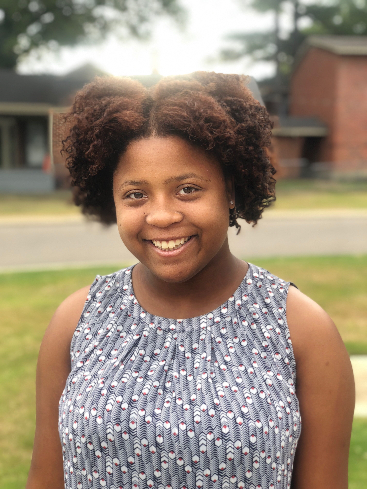

About Cierra Vereen
I was born in raised in Memphis, TN besides a couple of years in Farmville, Virginia. I have a wide variety of interests ranging from video gaming to reading to hiking up mountains. I am unique in just about every way and in-turn I like for my work to showcase my uniqueness. I am in the process of going through a six month coding boot camp through CodeCrew Code School here in Memphis TN.

My Education
Whitehaven High School(2013-2017)
I received a high school diploma with honors.
Colorado State University(2017)
I was pursuing a Bachelors of Science in Fish, Wildlife, Conservation Biology